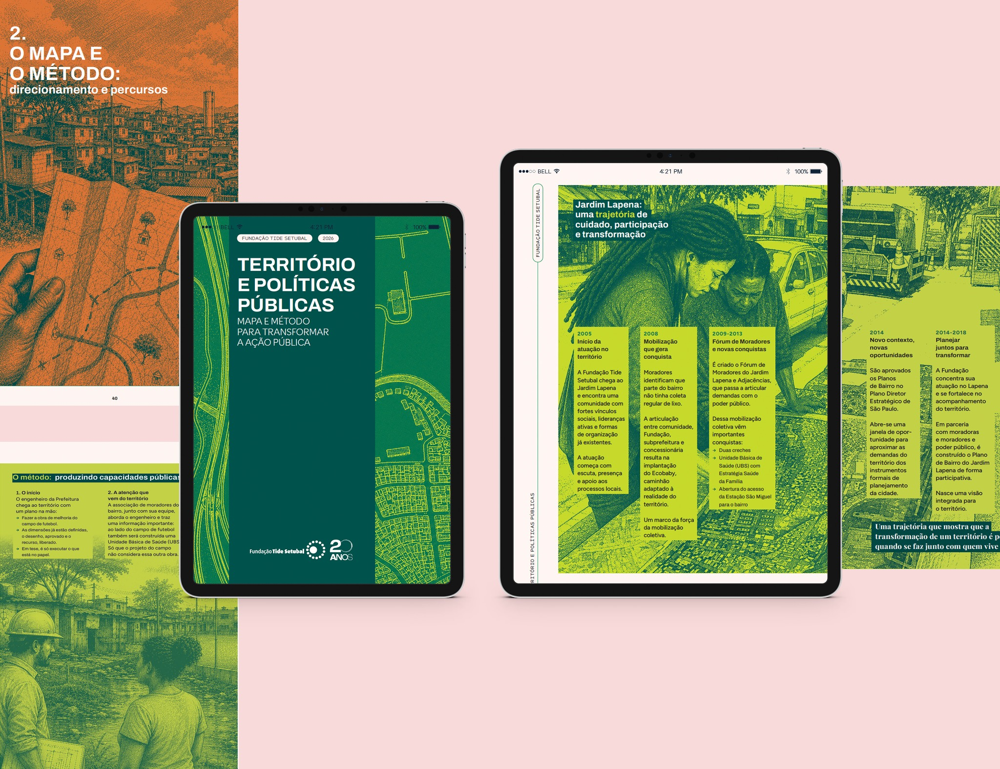
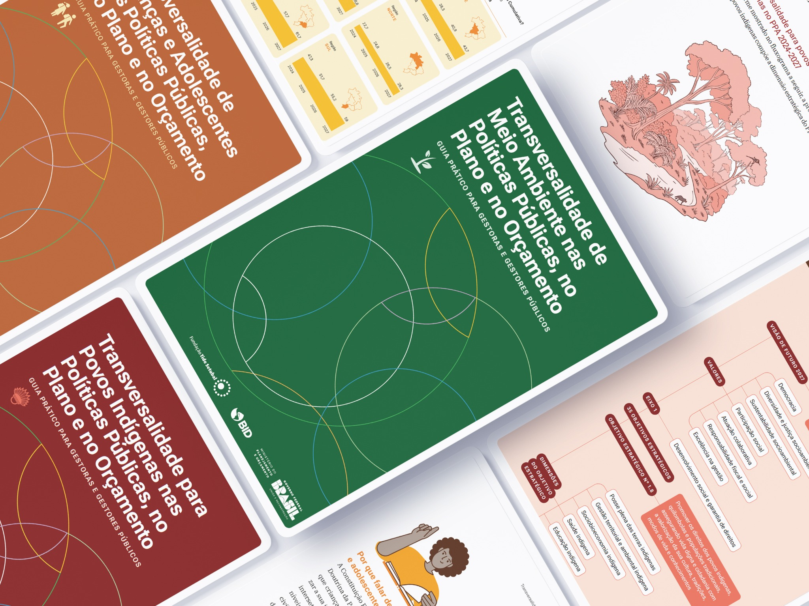
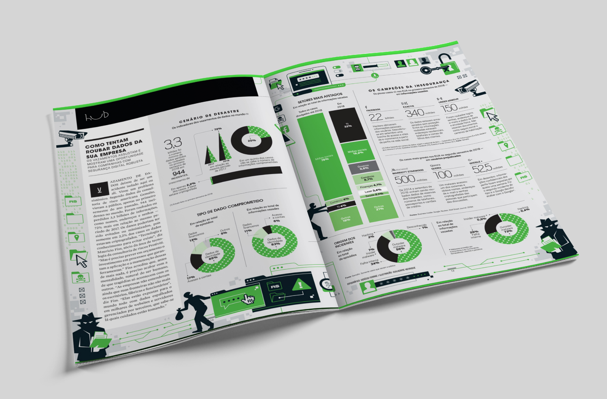
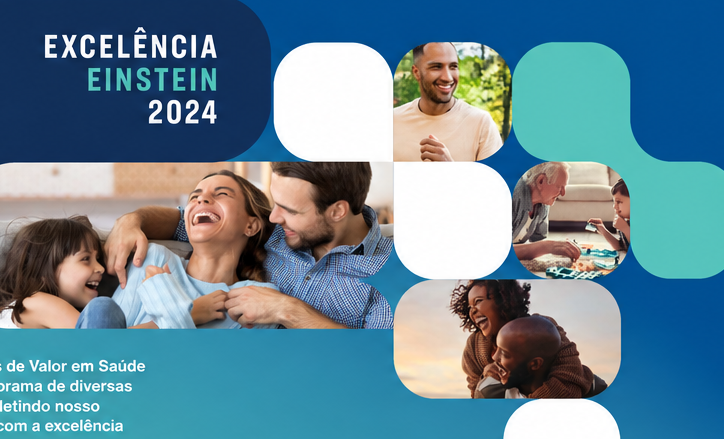
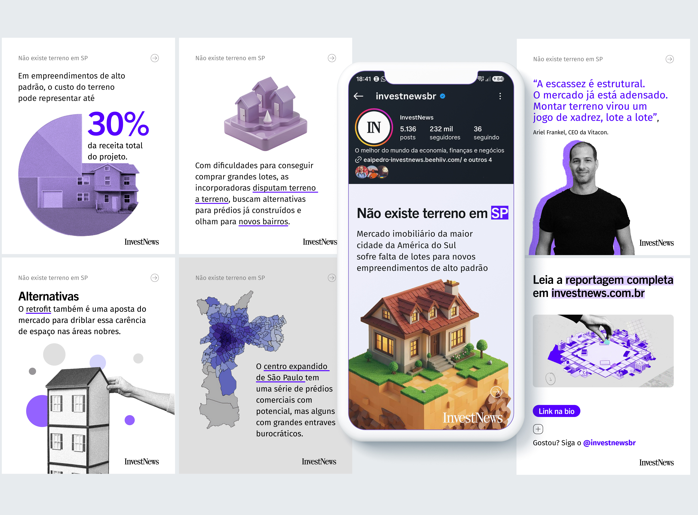
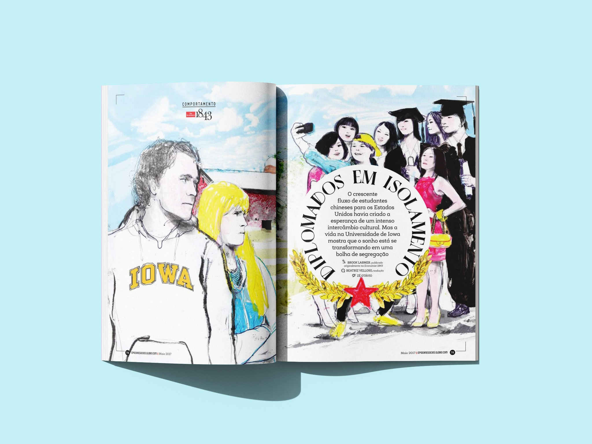
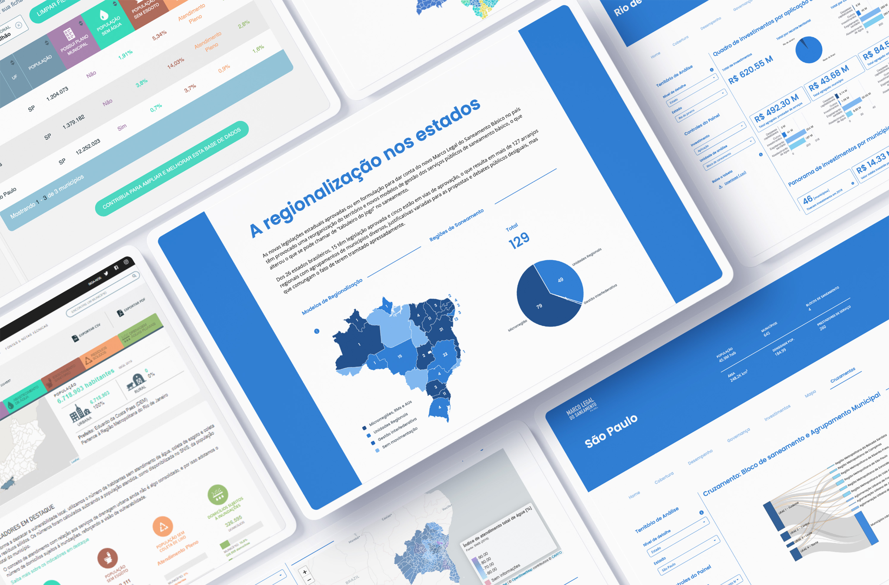

Graphic Designer · Art Director · Illustrator
Editorial design,
data visualization,
presentation & social media.
Projetos editoriais, relatórios, infografia, apresentações e comunicação visual.
Selected Work ↓









About
Verucio Ferraz é designer gráfico, art director e illustrator.
Designer gráfico com 20 anos de experiência em design editorial, direção de arte e narrativas visuais. Trabalhou em publicações das editoras Abril e Globo, desenvolvendo projetos para revistas, relatórios, infografia, visualização de dados, apresentações, comunicação institucional e conteúdo digital.
Ao longo da carreira, desenvolveu projetos para publicações, organizações e marcas, articulando conteúdo, tipografia, imagem e informação — da concepção e direção de colaboradores à finalização gráfica e digital.